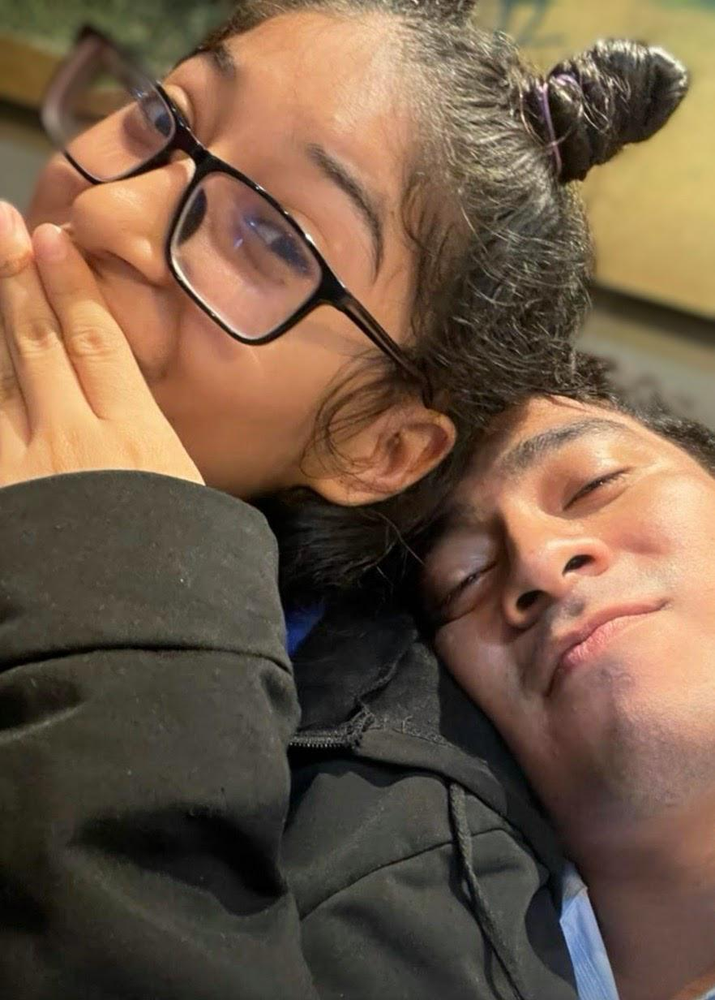

Edición Especial · Desde 2023 hasta la Eternidad
Año I · Número 1 · Edición Conmemorativa · Amor de Archivo Permanente
Un encuentro inesperado transformó el rumbo de dos destinos.
Julio de 2023. Las calles estaban cerradas por un desfile; las fiestas julianas habían alterado la rutina de la ciudad. Lo que parecía un día común se convirtió en un momento decisivo.
Una joven, desorientada y con lágrimas contenidas, buscaba desesperadamente dónde tomar el autobús. La confusión aumentaba. Las indicaciones no eran claras. El miedo y la frustración comenzaban a dominar la escena.
Fue entonces cuando ocurrió el giro inesperado.
— “Tranquila, yo te acompaño hasta que tomes el bus.”
Lo que inició como un gesto de ayuda se transformó en el primer capítulo de una historia que ninguno de los dos sabía que estaba comenzando.
Ella admite que no sabía cómo amar. No sabía cómo construir una relación.
Él le enseñó algo fundamental: ser ella misma, apoyarse mutuamente y caminar como iguales.
Hoy hay una certeza que destaca sobre todas:
Desea verlo cumplir todo aquello que se propone. Quiere verlo crecer, avanzar y alcanzar cada objetivo.
Todo eso la llena de orgullo y felicidad.

Fotografía tomada el día que todo comenzó.
Archivo histórico — Primer capítulo documentado de la Era Infinita.
Con el paso de los días, una revelación sorprendente salió a la luz: compartían aula, carrera y sueños académicos.
Habían coincidido durante mucho tiempo sin notarlo, hasta que el momento correcto decidió presentarlos de verdad.
Un mes después de conocerse, la historia dejó de ser amistad. Se convirtió en noviazgo.
Ella lo dice con claridad: fue su primer novio. Y espera que sea el último.
En medio de momentos difíciles, él no solo fue compañía; fue apoyo, impulso y luz. Donde antes había tristeza, comenzó a existir esperanza.
No celebran cada mes. No son expertos en detalles grandiosos. Pero celebran los años, el crecimiento y la fe que comparten. Ambos creen en Dios, y esa convicción sostiene su camino.
Y mantener viva esta certeza:
Que esta Era sea Infinita. Que el primer amor… sea también el definitivo.
“Tranquila, yo te acompaño.”
— Siempre a tu lado